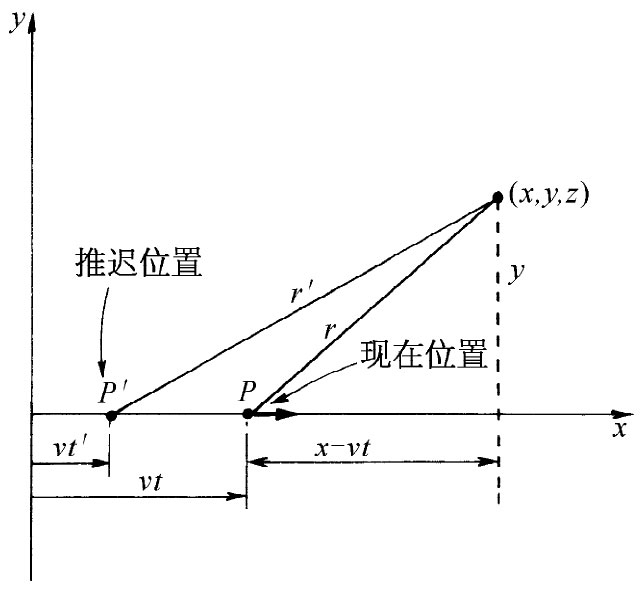
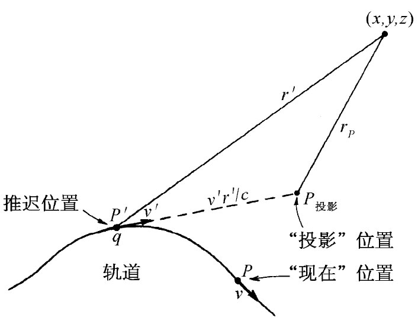

在上一章中见到势Aμ =（ϕ，A）是一个四维矢量。时间分量为标势ϕ，而三个空间分量则构成矢势A。通过应用洛伦兹变换我们也算出了做匀速直线运动粒子的势（在第21章中就已经用另一种方法求出了这些势）。对于一个在时刻t位置为（vt，0，0）的点电荷，其在点（x，y，z）的势为
对于一个“现”位置（指的是在t时刻 的位置）为x=vt的电荷，式（26.1）给出了时刻t在x，y和z处的势。注意这些式子是用（x-vt），y和z来表示的，它们是根据该运动电荷的现行位置 P测得的坐标（见图26-1）。我们知道的实际影响确是以速率c传播的，因而真正有效的影响乃是在推迟位置P′后面的电荷行为 [1] 。P′点位于x=vt′上（其中t′=t-r′/c是推迟时刻）。但是，电荷是做匀速直线运动的，因而在P′点与在P点上的行为自然有直接的联系。事实上，如果做一个附加假设，即假定那些势仅取决于在推迟时刻的位置和速度，那么式（26.1）便是以任意 方式运动的电荷的势的完整 公式了。方法是这样：假定你有以某种任意方式运动、比方其轨道如图26-2所示的电荷，而你试图找出在点（x，y，z）处的势。首先，你找出推迟位置P′以及在该位置时电荷的速度v′。然后你设想电荷会在这推迟时间（t-t′）里继续保持这一速度，以致此时它会出现在一个想象的位置P投影 处，这可称之为“投影位置”，并应该以速度v′到达那里（当然，电荷并不是那样运动，它在t时刻的确实位置是P）。于是在（x，y，z）点的势就恰好是一个想象电荷在该投影位置时由式（26.1）所给出的。我们现在要说的是，由于势仅取决于电荷在该推迟 时刻的行为，所以不管电荷是否继续恒速度运动或者是否在t′时刻之后——即在t时刻在点（x，y，z）将出现的势早已确定了之后——改变它的速度，势都将相同。
|  |  |
| 图26-1 求一个沿x轴匀速v运动的电荷q在P点的场。“此刻”在点（x，y，z）的场既可用“现”位置P，也可用（在t′=t-r′/c时刻的）“推迟”位置P′来表示 | 图26-2 电荷在任意轨道上运动。时刻t在点（x，y，z）的势由推迟时刻t-r′/c的位置P′和速度v′所确定，这些势可用该“投影”位置P投影 的坐标来表示（在时刻t的实际位置为P） |
你当然知道，一旦有了来自一个以任意方式运动着的电荷的势的公式，便拥有了全部电动力学，能够通过叠加以获得任何电荷分布的势。因此，通过写出麦克斯韦方程组，或者通过遵照如下的一系列陈述，可以把电动力学的所有现象都总结出来（如果你有机会登上一个荒岛，你就可以回忆起这些陈述。一切东西都可由此重新建造。当然，你要懂得洛伦兹变换，无论是在一个荒岛上或在其他任何地方你总别忘记它 ）。
首先 ，Aμ 是一个四维矢量；其次 ，关于一个静止电荷的库仑势为q/（4π∈0 r）；第三 ，一个以任何方式运动着的电荷所产生的势仅取决于在推迟时刻的速度和位置。只要有这三个事实我们就有了一切。根据Aμ 是个四维矢量这个事实，便可变换已知的库仑势，以获得匀速运动的势。然后，通过势仅取决于过去的在该推迟时刻电荷的速度这种最后一项陈述，我们便可以运用该投影位置手法而找到各势。这虽然不是一个处理问题特别有用的方法，但它表明了物理规律能够用许多不同方式加以表达，仍然是挺有趣的。
有时一些漫不经心的人们会说，全部电动力学都可以从洛伦兹变换和库仑定律完全推导出来。当然，那是完全错误的。首先，必须假定存在一个标势和一个矢势，它们一起构成一个四维矢量。这里，就告诉我们如何对势做变换了。然后，为什么只有那推迟时刻的影响才算有效的呢？若是这样提问就更好：为什么势仅取决于位置和速度，而与诸如加速度就毫无关系？而场 B和E则确实与加速度有关。如果你试图对于这些场也使用相同的论证，则你就会讲，它们也仅取决于推迟时刻的位置和速度。可是这么一来，来自加速电荷的场就与来自投影位置上的电荷的场相同——那是错误的。场 不仅取决于电荷沿路径的位置和速度，而且也取决于其加速度。所以在一切都可从洛伦兹变换推导出来的伟大说法中还有几个附加的默认假设（每当你看到从很少几个假设就能够产生出惊人数量成果的这种总结性的说法时，你总会发现它是错误的。如果你足够小心地加以思考的话，就会觉得其中往往有许多远非明显的隐含着的假设）。